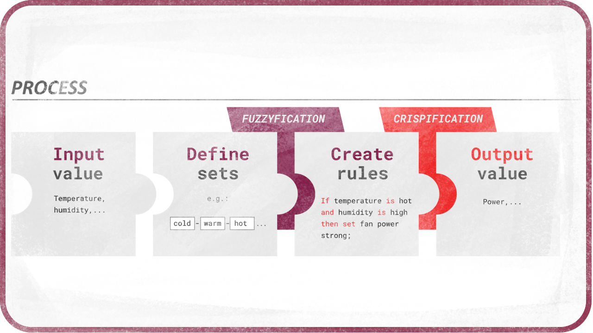

Advantages
These rules are very intuitive and very easy to use, as the implementation of the logic can be very close to natural language.
For that matter, it seems Fuzzy Logic are much closer to how we actually reason, think, and make deductions in every day life than simple Boolean logic with only “yes” or “no” answers; life is analogical, not binary, and so are our thoughts.
You will also notice that there is no need for the Else word anymore, and that combining a lot of rules makes a system both very resilient and precise. Thus, when a lot of rules are used, Fuzzy Logic is very resistant to mistakes, oversights or imprecision.
Note that this resilience can be a problem when trying to improve the system, as it becomes quickly difficult to understand the effect of each individual rule. When implementing Fuzzy Logic, it is very useful to have access to the result of each individual rules.
Principle

Concretely, there are three important steps to use Fuzzy Logic, from getting some input variables to generating output values.
- Input variables are crisp values, so the first step is to turn them into fuzzy values which can be quantified, and thus used in conditions and rules. Let’s call this Fuzzification.
- Rules have to be defined to control output values. This is the actual Logic step.
- Results have to be converted back from fuzzy values, the output of the rules, to actual crisp values. This can be called De-Fuzzification or Crispification.